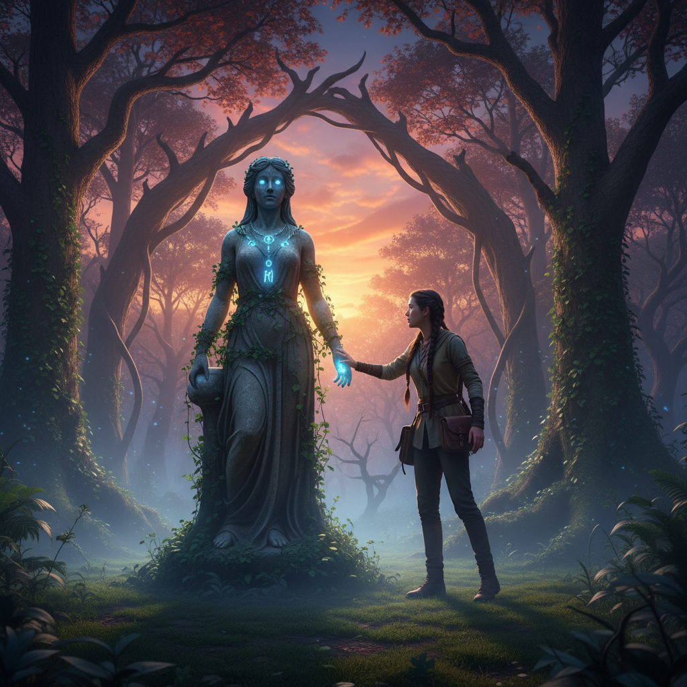

La Amenaza Sombria
2026-02-22
Isabel agarró con fuerza el volante, su mano temblorosa contra las marcas del tiempo impresas en la madera. Eduardo miraba a través de los espejos retrovisores, buscando cualquier signo de persecución.
"¿Qué hacemos ahora?", preguntó Isabel, su voz apenas audible sobre el rugido del motor y el siseo del viento.
Eduardo masticó su labio inferior antes de responder. "Seguimos avanzando", dijo con determinación. "Todavía no sabemos quiénes son o cuántos están detrás de esto, pero debemos estar listos para cualquier cosa."
El coche rugió mientras salían del bosque y entraban en el pueblo. La carretera se alargaba con una luz tenue que emanaba desde las pocas luces de algunos hogares aislados. El viento seguía soplando, creando un zumbido constante que parecía más oscuro que la noche misma.
Isabel mantuvo la vista fija en el camino, pero también se giró para mirar hacia atrás. Las sombras de los árboles a su espalda parecían estar viva, como si las figuras oscuras que habían visto antes ahora les observaran con más intensidad.
De repente, un faro cayó sobre ellos, interrumpiendo el silencio. Isabel se tensó, agarrando fuertemente el volante y mirando hacia la luz. Un coche negro estaba parado en medio de la carretera, sus luces blancas y brillantes iluminando todo a su alrededor.
Eduardo apretó el acelerador, intentando pasar entre los faros del otro vehículo. "¡No!", gritó Isabel, pero era demasiado tarde. El coche negro giró rápidamente, interponiéndose en su camino. Los neumáticos crujieron bajo la presión mientras el auto se detenía con un fuerte golpe.
Un hombre de gabardina negra y sombrero se asomó por la ventanilla del copiloto, sus ojos oscuros brillando con una curiosa mezcla de odio y alarma. "Señores", dijo en un tono monocorde, "ustedes son más difíciles de atrapar de lo que pensábamos."
Eduardo se giró hacia Isabel, su expresión seria. "¡Tienen que salir del coche!", susurró con voz ronca.
Isabel asintió y abrió la puerta, pero justo cuando salía, un hombre de traje negro y corbata roja bajó del otro lado. "No se muevan", advirtió el hombre en un tono frío y metálico, sus ojos clavados en Isabel con una intensidad que la hizo temblar.
Isabel sintió las manos de Eduardo agarrándola firmemente por los hombros. "¡Vamos!", le dijo en un susurro. Con un rápido movimiento, Isabel y Eduardo intentaron deslizarse hacia el otro lado del coche para escapar a cualquier otra parte.
Un grito ahogado se escuchó desde el interior del coche negro cuando las puertas se abrieron de golpe, revelando a dos hombres vestidos con uniformes negros y guantes blancos. "¡Quédense quietos!", ordenaron en coro.
Isabel y Eduardo se miraron aterrados, sus respiraciones agitadas y su corazón latiendo desesperadamente. En la penumbra de la carretera, parecía que cada sombra contaba una historia, cada silencio ocultaba un peligro.
El hombre con el sombrero se acercó a Isabel, extendiendo la mano para tocarla suavemente en el hombro. "No luchéis", dijo con voz calmada pero firme, "sois parte del juego y ahora es hora de que jueguéis bien."
Eduardo agarró a Isabel más fuertemente, sus ojos clavados en los hombres negros que rodeaban el coche. "¿Qué quieren?", preguntó con voz ronca.
El hombre con el sombrero volvió a asomarse por la ventanilla del copiloto y miró a Eduardo con una mezcla de ira y desafío en sus ojos. "Queremos que trabajéis para nosotros", dijo con tono frío. "Nos interesa lo que estás buscando, y necesitamos tu ayuda." Su voz resonó en la penumbra como un eco delante de los dos jóvenes.
Isabel y Eduardo se miraron, su mente trabajando a toda velocidad para encontrar una solución. El hombre con el sombrero sacó un sobre de su chaqueta y lo extendió hacia ellos. "Esto es solo el principio", dijo con voz ronca, "el comienzo de un nuevo juego."
Isabel miró el sobre en sus manos, sintiendo cómo la tensión se acumulaba en su pecho. "¿Qué hay dentro?", preguntó con voz temblorosa.
"Lo averiguarás cuando te conviertas en uno de nosotros", respondió el hombre con el sombrero, su sonrisa fría y vacía iluminando sus facciones. Isabel sintió cómo una mano helada se cerraba alrededor de su corazón, presionándola hacia abajo hasta que no pudo respirar.
Eduardo la jaló fuertemente del brazo, empujándola hacia el coche. "Vamos", susurró con voz temblorosa. Isabel asintió y se subió al vehículo, cerrando rápidamente la puerta tras ella.
El hombre con el sombrero miró a Eduardo con desafío antes de girar sobre sus talones y marcharse, dejando un silencio inquietante en su lugar. El coche negro se alejó con una última mirada feroz hacia Isabel y Eduardo antes de desvanecerse en la penumbra.
Isabel se sentó rígida en el asiento del copiloto, sus ojos clavados en el sobre blanco que sostenía entre sus manos. "¿Qué hacemos ahora?", preguntó con voz temblorosa a Eduardo, quien la miraba sin decir nada.
Eduardo agarró su mano y la apretó firmemente. "Lo averiguaré", dijo con determinación, "pero primero tenemos que salir de aquí." Isabel asintió, sintiendo una mezcla de miedo e incertidumbre. "Entonces, ¿qué hacemos ahora?" repitió, pero esta vez con más firmeza.
El coche comenzó a moverse lentamente en la carretera vacía, el viento soplándole a través del parabrisas y creando un zumbido constante que parecía seguirlos incluso fuera de la ciudad. La noche seguía siendo su enemigo silencioso, acechando en las sombras mientras Eduardo conducía con firmeza hacia una incierta salida.
Isabel miró por la ventana, observando cómo el cielo se tornaba más oscuro a medida que avanzaban. "Si lo vamos a hacer", dijo finalmente, "tenemos que empezar desde cero."
### IMAGE_PROMPT Un coche negro en medio de una carretera solitaria con figuras oscuras detrás. ### SUMMARY Isabel y Eduardo se ven forzados a enfrentarse a la amenaza directa cuando un coche negro los detiene en el camino, revelando hombres vestidos de negro que quieren que trabajen para ellos. La tensión aumenta mientras descubren un sobre con misteriosas instrucciones, forzándolos a tomar decisiones cruciales en medio del peligro.Mañana, nuevo capítulo.
Lo que dicen los lectores
Vuelvo cada día. Engancha de verdad.
El gancho del final me tiene enganchado.
Ya lo he recomendado. Muy bien escrito.